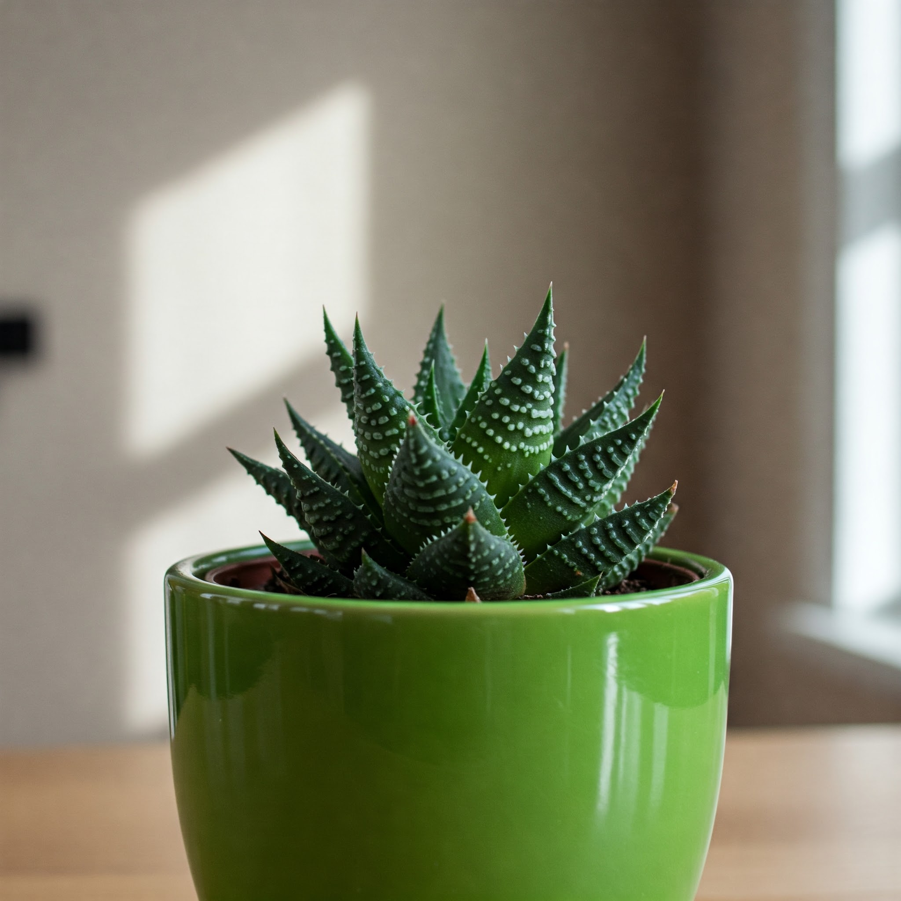

Haworthia (Fairy Washboard)

Description
Haworthia are small succulent plants native to Southern Africa. *Haworthiopsis limifolia* (Fairy Washboard) is particularly known for its distinctive, triangular leaves that form a rosette. The leaves are typically dark green and feature prominent, textured ridges or bumps running across their surface, resembling an old-fashioned washboard. They are slow-growing and remain relatively compact.
Care Instructions
- Light: Prefers bright, indirect light. Avoid intense, direct sunlight, which can cause leaves to scorch. Tolerates lower light better than many other succulents.
- Water: Water thoroughly when the soil has completely dried out. Allow excess water to drain freely. Water much less frequently in winter. Avoid overwatering.
- Soil: Requires a very well-draining soil mix, such as a cactus/succulent mix.
- Temperature: Average room temperatures are fine, ideally between 18-26°C (65-80°F).
- Humidity: Tolerates typical dry household air well.
- Fertilizer: Feed very sparingly, once or twice during spring/summer with diluted cactus fertilizer, if at all.
Fun Facts
- Common Names: Fairy Washboard, File-Leafed Haworthia.
- Origin: Native to southern regions of Africa (South Africa, Eswatini, Mozambique).
- Texture: The unique ridged texture of *H. limifolia* leaves is its most defining characteristic.
- Related to Aloe: Haworthias are related to Aloes and Gasterias.
- Offsets: Often produce offsets or "pups" around the base for easy propagation.
Toxicity
Generally considered non-toxic to humans, cats, and dogs, making it a safe succulent option for homes.